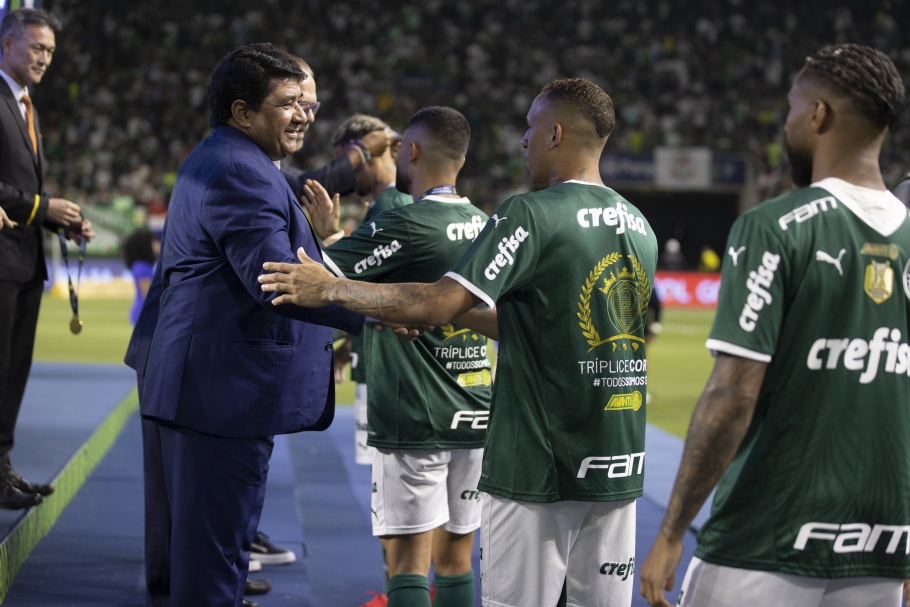

| Classificação | P | J | V | E | D | |
|---|---|---|---|---|---|---|
| PAL | 81 | 38 | 23 | 12 | 3 | |
| INT | 73 | 38 | 20 | 13 | 5 | |
| FLU | 70 | 38 | 21 | 7 | 10 | |
| COR | 65 | 38 | 18 | 11 | 9 | |
| FLA | 62 | 38 | 18 | 8 | 12 | |
| CAP | 58 | 38 | 16 | 10 | 12 | |
| CAMP | 58 | 38 | 15 | 13 | 10 | |
| FOR | 55 | 38 | 15 | 10 | 13 | |
| SAO | 54 | 38 | 13 | 15 | 10 | |
| AME | 53 | 38 | 15 | 8 | 15 | |
| BOT | 53 | 38 | 15 | 8 | 15 | |
| SAN | 47 | 38 | 12 | 11 | 15 | |
| GOI | 46 | 38 | 11 | 13 | 14 | |
| RBB | 44 | 38 | 11 | 11 | 16 | |
| CFC | 42 | 38 | 12 | 6 | 20 | |
| CUI | 41 | 38 | 10 | 11 | 17 | |
| CEA | 37 | 38 | 7 | 16 | 15 | |
| ACG | 36 | 38 | 8 | 12 | 18 | |
| AVA | 35 | 38 | 9 | 8 | 21 | |
| JUV | 22 | 38 | 3 | 13 | 22 | |
O Palmeiras recebeu, nesta quarta-feira (9), o troféu do Brasileirão Assaí 2022. O clube paulista, que já havia se sagrado campeão na 35ª rodada, enfrentou o América-MG, no Allianz Parque, em São Paulo. De virada, a equipe comandada por Abel Ferreira contou com gols de Gustavo Scarpa e Murilo para vencer sua 23ª partida na competição e ainda celebrar diante de seus torcedores.
Presente na cerimônia do hendecacampeonato do Verdão, o presidente da CBF, Ednaldo Rodrigues, foi quem passou a taça para Leila Pereira, presidente do clube paulista. Foi ela quem entregou o troféu aos jogadores do clube.
"Mais uma linda festa no futebol brasileiro. Gostaria de parabenizar a todos os participantes da Série A, principalmente o Palmeiras, que levantou mais um troféu de campeão brasileiro. Todos do clube estão de parabéns pela campanha. Temos que saudar o futebol do nosso país, ainda mais em um momento em que os torcedores estão voltando a encher os estádios. Desejo uma boa festa e que tenhamos um esporte com cada vez menos preconceito", disse Ednaldo Rodrigues.

" Presidente Ednaldo Rodrigues participa da entrega da taça do Brasileirão Série A para o Palmeiras no Allianz Parque"
Créditos: "Lucas Figueiredo/CBF"
O Diretor de Competições da entidade, Julio Avellar, também comentou sobre o encerramento de mais um campeonato.
"A CBF está sempre tentando melhorar os campeonatos de todas as formas. Conseguimos terminar mais uma competição bem, mas não vamos descansar. No próximo ano teremos mais desafios e buscamos sempre melhorar", pontuou.
"O time mais consistente dentro e fora de campo foi premiado. Fica o meu reconhecimento ao profissionalismo do Palmeiras ao longo do ano. O clube mereceu ser campeão", completou.